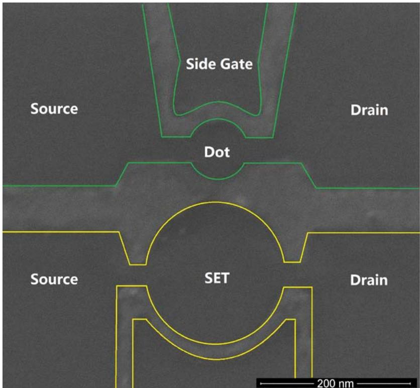
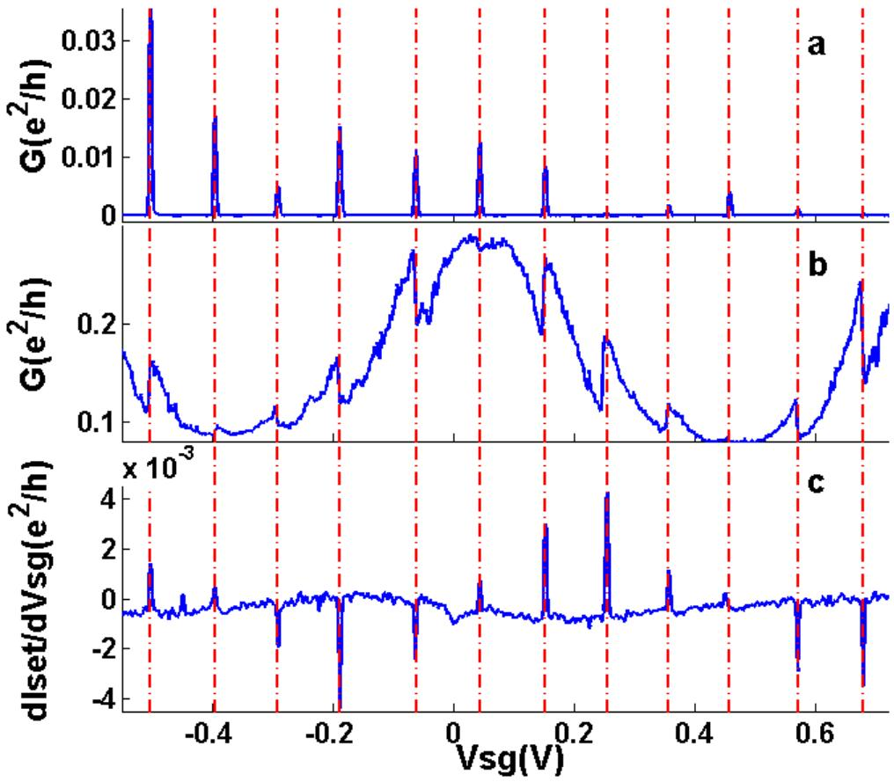
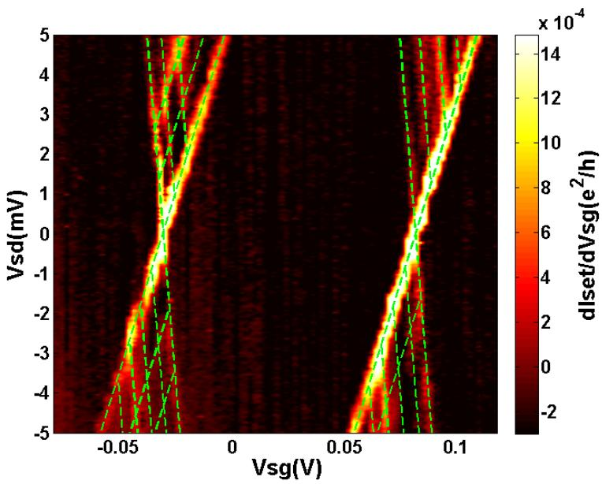
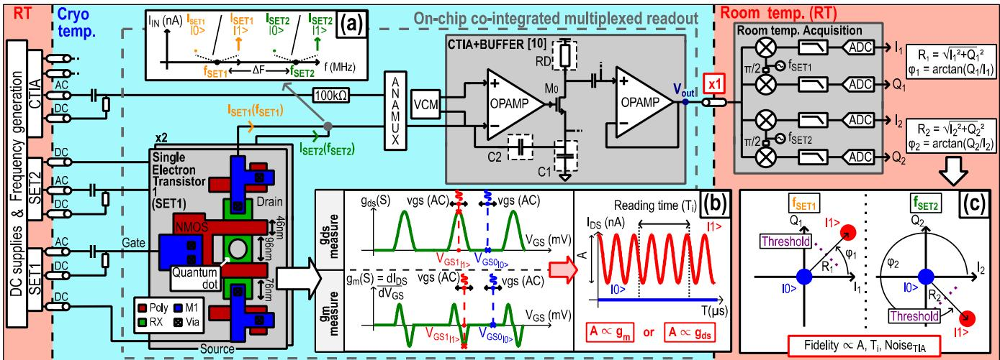
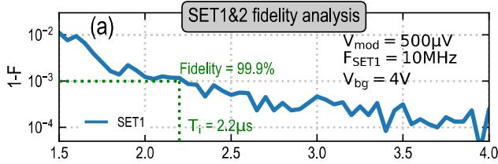
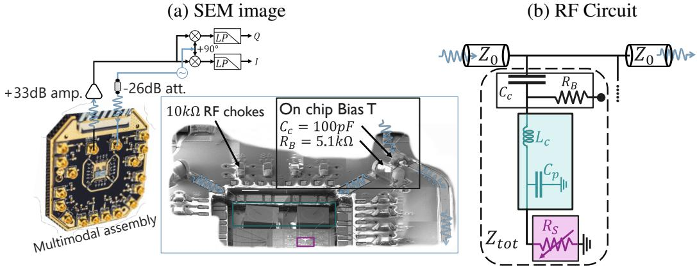
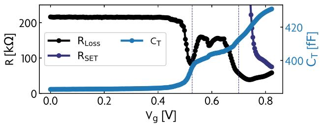
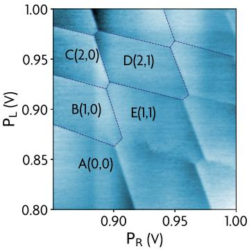

物理图像
单电子晶体管本质上是一个由两个隧穿结串联、把一个极小的导电岛夹在源、漏极之间的库仑阻塞器件。岛与外界的总电容
通常只有几 aF 到几百 aF，于是充电能（charging energy）
典型地达到 1 meV 量级），远高于稀释制冷机里的电子温度 ，因此单电子隧穿被严格限制在一个一个地进行。
在常相互作用模型（CI 模型）下，含 个电子的岛总能量为
其中 、 分别为源漏偏压和栅压）。第 个电子进入岛所需的最小能量即电化学势：
把岛电荷 与栅电容耦合 视为对岛电势的连续调节，SET 表现出两套独立可调的电压自由度： 平移 、 撑开”偏压窗口”。在 平面上扫描，源漏电流呈现规则的菱形图样——库仑菱形：菱形内是库仑阻塞区（电流为零，电子数恒定），菱形外才有非零电流。
SET 作为邻位电荷传感器
SET 作为传感器的核心思想是：把被测量子点的电荷变化通过电容耦合到 SET 岛上，岛电势随之微调，SET 源漏电流 出现台阶式跳变；跳变次数与幅度与被测点电荷改变一一对应）。
被测点与 SET 岛之间的互电容 与 SET 岛总电容 之比定义了”杠杆臂”
越大，被测点一个电子所引起的 SET 岛电势改变越大，电流跳变越容易被分辨。这是 SET 与QPC 电荷传感器共享的设计原则：传感器与被测点之间必须仅电容耦合而不直接隧穿耦合，传感器本身有自己的源漏引线。
SET 与QPC 的对比决定了它们的实验分工：
| 维度 | SET（库仑岛） | QPC（窄通道） |
|---|---|---|
| 探测信号 | 库仑振荡峰 | 通道电导 |
| 灵敏度 | 量级（RF-SET） | 量级（RF-QPC） |
| 带宽 | 直流带宽极低（数十 kHz），RF-SET 可达 MHz | 直流几十 kHz，RF-QPC 可达 MHz |
| 工艺难度 | 复杂（双隧穿结纳米尺度） | 较简单（与被测点同时加工） |
| 适用场景 | 超导电荷量子比特读出（早期） | 半导体量子点邻位电荷传感（主流） |
总结道：“单电子晶体管的探测带宽与探测灵敏度非常好，但是制作工艺比较复杂（Lu et al., 2003），而量子点接触或者量子点电荷探测器往往比较容易在量子点加工时同步制作完成，所以在实际试验中，我们往往采用后两种方式。“这一句概括了半导体量子点实验中 SET 早期盛行、QPC 后期占主导的工艺脉络。
全石墨烯集成：一次刻蚀的 QD+SET 电荷传感
传统 SET 电荷计多为金属岛（Al/AlOₓ/Al 隧道结）工艺；Wang 等人 2010 年演示了同材料、单步工艺的替代路线：在单层石墨烯上用电子束光刻加氧等离子体刻蚀，一次定义出直径 90 nm 的量子点和直径 180 nm 的 SET 库仑岛，二者间距仅 50 nm（传统半导体 QD+QPC 方案的典型间距约 100 nm）。间距压缩直接增大点–传感器互电容，石墨烯量子点上每加入一个电子，SET 电导出现约 30% 的台阶式变化：
其中 是被测点电荷改变 引起的 SET 电导变化、 是工作点电导。这么大的相对响应正是强电容耦合的收益，可用于时间分辨电荷测量或电荷/自旋比特读出。

器件扫描电镜图：上方为直径 90 nm 的石墨烯量子点（主器件），下方为直径 180 nm 的 SET 库仑岛（电荷传感器），二者在一次刻蚀中成型、边缘间距 50 nm；亮线为势垒与侧栅，标尺 200 nm。图源：Wang et al. (2010), Fig. 1(a)。锁相跨导读出。 直流背景大时，可在侧栅上叠加方波调制脉冲，用与脉冲同步的锁相放大器直接测 SET 跨导 ：量子点单电子充放电表现为跨导曲线上的尖锐尖峰/凹陷。该方式最重要的价值在于直测电流失效区仍可工作——石墨烯量子点在侧栅 0.2–0.5 V 区间输运电流小到常规手段测不到，而 SET 跨导信号依然清晰，与直接输运的库仑振荡峰完美对齐。

_同一侧栅扫下的三联图：(a) 量子点电导的库仑振荡；(b) SET 电导出现与之一一对应的台阶（约占总信号 30%）；(c) SET 跨导
的尖峰/凹陷，在 (a) 中无信号的 0.2–0.5 V 区间仍给出完整电荷态信息；红色虚线为对齐引导线，三幅图同一次扫描同步记录。图源：Wang et al. (2010), Fig. 2。_
带宽与灵敏度。 以调制脉冲频率扫描 SET 跨导增益，−3 dB（0.707）点给出器件带宽约 600 Hz——受杂散电容限制，高频响应迅速下降。电荷灵敏度用标准折算法标定：在 SET 背栅上施加相当于 个电子的信号、测到信噪比为 1 的响应，即
其中 为测量带宽、 为元电荷。这一水平与此前 GaAs 量子点 + 超导 Al SET 系统的灵敏度相当，而石墨烯 SET 工艺更简单可靠、且能在液氦温度以上工作。
探测激发态谱。 在源漏偏压–侧栅平面上，SET 跨导信号复现出量子点的库仑菱形，且菱形边旁平行线的激发态谱线在探测器信号中比直接输运测量更清晰——高偏压下多个激发能级参与隧穿的细节因此可读。这对获取库仑菱形之外的量子点能级信息（进而推断电子自旋态）至关重要。

_SET 跨导信号–
平面上的库仑菱形：与量子点直测菱形完全匹配，菱形边外多条平行线对应量子点激发态参与隧穿；这些谱线在探测器通道中比直接输运更醒目。图源：Wang et al. (2010), Fig. 4(b)。_
石墨烯平台的物理动机在于其弱自旋轨道耦合与近乎消失的超精细相互作用（^{12}C 核自旋为零）——这正是石墨烯量子点走向”无核自旋量子世界”固态比特的出发点，而 QD+SET 同材集成是其中的读出基本单元。
直流 SET 的输出曲线
直流偏置下 SET 的源漏电流随栅压呈周期性”库仑振荡”——每经历一次 与源漏费米面对齐，就有一个共振隧穿峰。峰间距由 决定：
而峰高则由 决定：在低偏压极限 下，库仑振荡峰值电流
被两个隧穿结的串联电阻 限制。一旦 （偏压窗口打开到能容纳两个相邻 ），电流峰展宽为”库仑台阶”，相邻 同时贡献隧穿，– 曲线进入饱和区。
把 SET 工作点选在库仑振荡峰的斜率最大处（峰侧），任何外部静电势微扰都会引起 的大幅度变化，这正是 SET 作为静电计的”线性工作区”。工作点同样存在漂移问题：栅压、温度、磁场和被测点的局域电荷环境都会缓慢推移库仑振荡的位置，导致灵敏度下降，需要周期性重新标定。
射频 SET：从直流瓶颈到 100 MHz 带宽
直流 SET 的带宽被两个 RC 通道限制：岛-源、岛-漏两个隧穿结的串联电阻 与外接引线的寄生电容 构成低通滤波器
这与 QPC 的传统测量带宽处于同一数量级）。1998 年 Schoelkopf 等人把 SET 与一个阻抗匹配谐振电路耦合，以射频反射方式读出岛电流变化，构成的 RF-SET 把带宽推到 100 MHz 量级，同时保留了 SET 的超高电荷灵敏度）。
等效电路与谐振频率
射频 SET 的等效电路与 RF-QPC 同构：把 SET 视为一个电阻 （在库仑峰侧取工作点时通常为数十 kΩ 到几百 kΩ 量级）与两个隧穿结电容之和的串联，再与一个外部电感 、寄生电容 组成谐振子
阻抗
谐振条件 给出与 RF-QPC 相同的
。当 （特征阻抗 ）时电路工作在欠耦合区，带宽由 SET 电阻决定；反之进入过耦合区，带宽由 决定。RF-SET 一般工作在过耦合区。
灵敏度
设 SET 岛电荷受外部以调制频率 在工作点附近作小幅变化 ，反射信号在载波两侧出现一对边带，幅度比与反射系数变化 挂钩。电导灵敏度
除以杠杆臂系数 即得电荷灵敏度
其中 是频谱仪分辨率带宽）。 因子来源于只解调上边带、下边带丢弃。Schoelkopf 1998 年首次报告的 RF-SET 在 nH、 pF 下给出 MHz、带宽 7 MHz、电荷灵敏度高达 。
多路复用
RF-SET 同样适用波分复用（wavelength division multiplexing, WDM）：多个 SET 由不同的 LC 谐振频率区分，共用一根射频同轴线输入载波、输出反射信号，每个 SET 由 IQ 混频器独立解调。2002 年 Stevenson 等人报告了 RF-SET 阵列的多路复用实现。
无谐振腔的片上频分复用：CTIA 读出（Schmidt 2024）
谐振腔路线（无论反射式还是 WDM）每个通道都要一个电感谐振器，体积与规模化互斥。CEA/Quobly 的替代方案把 SET 的输出当电流处理：两个 28 nm FDSOI 单片共集成的 SET（背栅 帮助双顶栅之间形成单点，顶/背栅耦合比 ~8.5）分别用不同频率的载波调制栅压或源极，电流求和后由片上**电容反馈跨阻放大器（CTIA）**放大，经缓冲器沿单根线送到室温做并行 I/Q 解调——频分多址（FDMA）+ 开关键控（OOK）式判决，完全不需要谐振腔。CTIA 实测（4.2 K）：跨阻增益 121 dB·Ω、带宽 25 MHz、输入参考噪声 90 fA/√Hz、功耗 428 µW。通道正交条件为频差超过积分时间的倒数，
实测 、 时双通道同时读出保真度 99.9%（BER=10⁻³）——满足自旋比特读出的速度与保真度要求；栅调制（读 ）与源调制（读 ）两种模式给出相同的库仑菱形特征，为不同量子核网络架构留出选择。

频分复用 TIA 读出方案：(a) 输入信号的频率表示——两个 SET 各分一个载波；(b) 可测参数与双态定义（|0⟩ 取库仑阻塞噪声底、|1⟩ 调到 g_m 峰）；(c) I/Q 平面上的双幅度判决（OOK 型阈值算法）。图源：Schmidt et al. (2024), Fig. 2。

双通道同时读出保真度随积分时间的变化：两个共集成 SET 在 T_i=2.2 µs、通道间距 1 MHz 下同时达到 99.9% 保真度（BER=10⁻³）——无谐振腔频分复用读出的首次演示。图源：Schmidt et al. (2024), Fig. 8。
传输式 RF-SET：免定向耦合器的读出（Fattal 2025）
反射式 RF-SET 的链路离不开定向耦合器（或双环形器）分离入射/反射——多通道扩展时这是可观的硬件开销。Fattal 等人（IMEC）演示了传输式替代：Si/SiGe 平台上与双量子点单片集成的 SET，经键合线接到超导 Nb 螺旋电感构成阻抗变换网络，载波经耦合电容穿过谐振器、透射信号直接检测——
无需任何定向耦合器件，装置显著简化，且天然适合频分复用。开启过程的三分区分析（总电容效应 、RF 损耗 、SET 电阻 随全局开启的演化）给出阻抗网络与器件设计的优化依据。读出基准用双量子点的两类电荷跃迁标定：IQ 平面上两高斯斑的信噪比
（、 为两斑均值与标准差）。短积分区 （白噪声主导）、长积分区饱和（1/f 噪声）；SNR=1 的最小积分时间做到 0.1–1 μs 量级（点间跃迁 ICT 优于点–库跃迁 DRT，差异直接反映两类跃迁的电偶极矩大小），与最先进的反射式 RF-SET 相当。谐振器在面内 0.5 T 磁场下性能不受影响——兼容自旋比特的工作磁场。

传输式 RF-SET 电路：PCB 上的共面波导经表面贴装耦合电容连接 Si/SiGe 芯片——单片集成的 SET（邻近双量子点）经键合线接到超导 Nb 螺旋电感构成阻抗变换谐振器，透射信号直接检测，无需定向耦合器。图源：Fattal et al. (2025), Fig. 1。

RF-SET 开启过程的三分区：总电容效应 C_T、RF 损耗 R_Loss 与 SET 电阻 R_SET 随全局开启电压的演化——分区行为是阻抗变换网络与器件设计的优化依据。图源：Fattal et al. (2025), Fig. 5。

读出基准：(a)(b) 用传输式 RF-SET 监测的单点电荷稳定图（积分 1 ms）；(c)(d) 沿路径跨越点间跃迁（ICT）与点–库跃迁（DRT）的 IQ 分布——高斯斑对给出 SNR 随积分时间的标度，SNR=1 最小积分时间达 0.1–1 μs 量级，与反射式方案相当。图源：Fattal et al. (2025), Fig. 6。
参数与量级
| 量 | 典型值 | 来源 |
|---|---|---|
| 岛总电容 | 几 aF—几百 aF（纳米尺度金属岛或半导体岛） | |
| 充电能 | 约 1 meV 量级 | ； |
| 栅电容 对应 | 单峰间距 （典型 几 mV—几十 mV） | |
| 隧穿电阻 | （库仑阻塞条件） | |
| 直流 SET 库仑振荡峰间距 | ||
| 直流工作点电流 | ||
| 直流带宽 | 数十 kHz 量级（受 限制） | ； |
| RF-SET 谐振频率 | 332 MHz（Schoelkopf， nH、 pF） | |
| RF-SET 带宽 | 7–24 MHz 量级 | |
| RF-SET 电荷灵敏度 | （Schoelkopf 1998）；（Wei Lu） | |
| 石墨烯集成 SET 电荷灵敏度 | （Wang 2010， 信号 SNR=1 折算） | |
| 石墨烯集成 SET 带宽 | 约 600 Hz（−3 dB，杂散电容限制） | |
| 石墨烯集成单电子响应 | （QD–SET 间距 50 nm） | |
| 射频功率 | dBm 量级（折中灵敏度与反作用） | |
| 传输式 RF-SET（Si/SiGe） | SNR=1 最小积分 0.1–1 μs（ICT 优于 DRT）；免定向耦合器；面内 0.5 T 磁场兼容 | Fattal 2025 |
实验特征与典型应用
逐个数电子。 SET 的库仑振荡峰间距 是绝对标尺，扫描栅压时每经历一个峰，岛电荷增加/减少一个电子。利用这一点可以精确数出岛上的电子数，是少电子量子点实验的标准初始化手段之一）。
自旋–电荷转换。 SET 本身只测电荷，要读自旋需要先把自旋态映射到电荷分布。最常见的机制是单发读出中的泡利自旋阻塞：在双量子点中 单态隧穿被允许、三态被禁止，隧穿后电荷态不同，再由 SET 或 QPC 读取。早期实验即采用 SET 完成单发自旋读出。
电荷噪声谱学。 即使在库仑阻塞区（直流电流为零），SET 工作点处 仍受局域电荷涨落调制，因此 SET 也是测量电荷噪声的工具。RF-SET 把这种能力扩展到 MHz 量级，可以研究更宽频段的电荷涨落。
快速相图采集。 把 RF-SET 与快速锯齿波扫描结合，可在数十秒内完成传统方法数十分钟的相图采集，测量速度提升约两个量级。
局限与替代方案
- 工艺复杂：SET 要求两个串联隧穿结、岛尺寸在数十 nm 量级，金属岛 SET 通常依赖电子束光刻与阴影蒸发的精确套刻，半导体 SET 则依赖栅极定义的静电岛；加工难度高于 QPC。
- 工作点漂移：随栅压、温度、磁场变化，库仑振荡位置会漂移出灵敏区，需要周期性重新标定。
- 直流带宽极低：受 限制，直流 SET 仅数十 kHz 量级。
- 射频反作用：过高的射频功率会向岛注入散粒噪声与热激发，破坏被测态，需要折中灵敏度与反作用）。此外，传感库仑耦合本身的量子反作用（which-path 退相干）与功率反作用是两个独立通道——量子点型传感器的退相干能标由被测系统隧穿展宽 ħΓ 设定，与 QPC 型（k_BT）不同，见电荷传感反作用与 which-path 退相干。
- 替代方案：在半导体量子点体系中已被QPC取代主流地位；栅极色散读出（栅极色散读出）和色散读出则在多比特共用射频线场景下提供了另一种非破坏性电荷传感路径。
与其他概念的关系
- 半导体量子点本身就是 SET 岛的物理实现：被两侧隧穿势垒夹住的栅控岛既可以作为被测的量子比特，也可以改装为邻位 SET 传感器。
- 库仑阻塞是 SET 工作的物理基础：只有充电能大于热涨落、隧穿电阻大于电阻量子时，单电子隧穿才会以单 e 步骤严格发生。
- 常相互作用模型给出 SET 静电学的全部定量结果：电化学势 、充电能 、库仑振荡峰间距 。
- 电化学势对齐条件决定 SET 何时发生隧穿，进而决定 何时出现电流峰。
- 电荷稳定图是 SET 扫描得到的主要图样：在 平面上的库仑菱形是 SET 与单量子点共有的特征。
- 隧穿耦合决定 SET 工作电流大小：隧穿电阻 越大、单 e 隧穿越严格，但峰值电流也越小。
- QPC 电荷传感器是 SET 的主要替代方案：两者都是邻位电容耦合的电荷传感，但 QPC 工艺简单、与被测点同时加工，因此在半导体量子点实验中取代 SET 成为主流。
- 射频反射测量是把 SET 的直流带宽从 kHz 推到 100 MHz 的关键技术，RF-SET 与 RF-QPC 共用同一套阻抗匹配与 IQ 解调框架。
- 色散读出通过把电荷态映射为谐振腔频率/相位偏移实现非破坏性传感，与 SET 同样支持单发读出，但作用机制是色散频移而非源漏电流调制。
- 电荷噪声既是 SET 主要噪声来源（限制灵敏度）也是 SET 可以测量的对象：工作点处 的低频 涨落直接反映被测点的电荷环境。
- 石墨烯量子点平台可实现 QD 与 SET 同材一次刻蚀集成：50 nm 近距强耦合给出每电子约 30% 的电导响应，是石墨烯自旋比特读出的基本单元。
参考文献
- Fattal, I., Van Damme, J., Raes, B., Godfrin, C., Jaliel, G., Chen, K., Van Caekenberghe, T. et al. Radio frequency single electron transmission spectroscopy of a semiconductor Si/SiGe quantum dot. arXiv:2504.05016 (2025)（QAtlas 缓存：2504.05016）。
- Schmidt, Q., Jadot, B., Martinez, B., Houriez, T., et al. Compact frequency multiplexed readout of silicon quantum dots in monolithic FDSOI 28nm technology. ESSERC 2024（2024）. DOI: 10.1109/ESSERC62670.2024.10719580；arXiv:2410.22565（QAtlas 缓存：2410.22565）。
- Wang, L.-J. et al. A Graphene Quantum Dot with a Single Electron Transistor as Integrated Charge Sensor. Applied Physics Letters 97, 262113 (2010). DOI: 10.1063/1.3533021；arXiv:1008.4868（QAtlas 缓存：1008.4868）。
完整文献库（含各篇站内全文页）见 参考文献库。